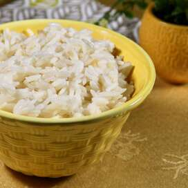

Wali (plain Rice)
Home
About

Ingridients
- 1 Cup Clean Pishori rice
- 2 Cups of water
- Salt to taste
- 1 Tea-spoon cooking oil
Method
Add the rice into sufuria
mix the Ingridients on high heat
After coming to a boil, cover and lower the heat
Let simmer for 10 min
Serve with Stew of choice